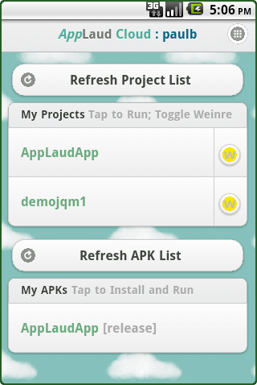
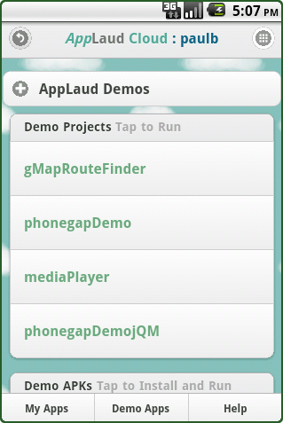

AppLaud Cloud
Login and Register
To log in and register, visit the AppLaud Login page and follow instructions from there.User Guide
An overview of AppLaud Cloud capabilities and how to get started. The same information shows up in the edit pane when no files are open or re-opened with menu Help –> Get Started.Start a Project
- Choose New –> Project
- Give it a name, select a Project Template, and click Create
- Double click files in left pane to edit
- File and Edit options available with right click and New/File/Edit menus
- Make sure browser pop-ups are enabled
Running the App
- Build not required
- Scan the QR Code to download the app to the device
- AppLaud App Documentation
- Tap 'Refresh Project List'
- Tap a project to begin running it
Debugging
- Tap 'W' icon on device app's Project List
- Tap the project
- On the desktop, select Debug –> Weinre Controller
- Make sure there is a green client and select Elements
- Examine HTML, change CSS, call functions, etc
- More at Weinre Home
Emulating
- Select Emulate –> Ripple Emulator
- Use Chrome Developer Tools to run and examine the project
- Use Ripple Console to simulate PhoneGap APIs
- More at Ripple Home
Packaging/Building
- Choose a build type
- Wait a minute or two for server build
- On the app, choose 'Refresh APK List
- Select app to download to your device
Uploading Files
- Select File –> Upload
- Right click on .zip files and select unzip
- Also drag and drop files onto window and select File –> Save As
Downloading Files/Folders/Projects
- Right click –> Download
FAQ
1. Can I develop Java with AppLaud?While AppLaud is primarily focused on JavaScript/HTML/CSS development, it supports doing any Android development, including editing and updating Java files. AppLaud Cloud can build and package any Android app and the AppLaud App will download any Android app. Note that the standard AppLaud App's run project without download capability does not work for project's with modified Java files.
2. It's the web, why only Android?
While almost all of the technology in AppLaud is cross-platform, a few key pieces are OS-specific. Since we're prioritizing creating a great fully-functional development environment, we want to do that with a constrained test matrix first. iOS is our next priority.
3. What's the business model?
There are several options. Currently the major focus is to create a great development environment and build a strong user community. The product is free to use. The intention is for the environment to always remain free for open source development. Stay tuned.
4. How do you import Eclipse projects into AppLaud Cloud?
In Eclipse:
- Right click on project name and choose Export
- Select Archive File
- Choose file name for zip
- Click Finish
- Select New -> Import Project
- Enter Project Name. It may be different than the Eclipse name
- Choose File. Navigate to the location of the zip file
- Click Import Project
AppLaud Cloud IDE
Menu Help
New
- Project Start the New Project wizard
- Folder When a project or folder is selected, create a new folder
- File When a project or folder is selected, create a new file
- Upload When a project or folder is selected, select files to upload. To upload a directory, use zip on your workstation, upload the zipfile, right click to unzip. Also, single files can be dragged and dropped to an open edit window and saved with File–>Save As
File
- Save Save the currently open file. Also command-S or control-S. Also see, Preferences–>Editor–>Automatic Save All
- Save As Save current file to a selected project or folder. Especially useful for dragged and dropped files
- Save All Save all currently modified files
- Open Open currently selected project, folder, or file
- Rename Rename folder or file
- Delete Delete selected projects, folders, and files
- Refresh Refresh selected project or folder. For example, after a build, Refresh on bin directory will show the new files
Edit
- Cut Cut selected folders and files. The resources won't be removed until they're pasted elsewhere
- Copy Copy selected folders and files.
- Paste Paste most recent cut or copy to selected folder or project
- Find Find and Replace wizard for currently open file
Emulate
- Ripple Emulator
- Use Chrome Developer Tools to run and examine the project
- Use Ripple Console to simulate PhoneGap APIs
- More at Ripple Home
Debug
- Weinre Controller Opens Weinre controller to examine apps running with weinre enabled on device with the Applaud App.
Package
The builds may take a few minutes. You can continue to work, but be careful not to change files being built. The resulting builds are available for download with the AppLaud App's Refresh APKs option. Note that building is not typically necessary in the development process, since apps can be run without building from the AppLaud App.- Basic Build Runs standard Android development build (ant debug) on the server.
- Debug (weinre) Build Same as Basic build, but the resulting apk file has weinre enabled
- Release Build Runs a wizard to create a signed release build (ant release) More about getting the required information here
Preferences
- Editor Manage preferences for the embedded Ace editor. Note: changes are not yet persistent to subsequent AppLaud sessions
- Log Out Log out of AppLaud. Note: you may still be logged in to your OpenId provider.
Help
- User Guide An overview of AppLaud Cloud capabilities and how to get started. The same information shows up in the edit pane when no files are open
- Menu Items You're here now
- Right Click Capabilities when right clicking on projects, folders, and files
- AppLaud Forum Mailing list and forum (a Google Group) to discuss AppLaud Cloud
- Editor Shortcuts Link to the keyboard shortcuts for the Ace editor
AppLaud Right Click Options
- New File When a project or folder is selected, create a new file
- New Folder When a project or folder is selected, create a new folder
- Rename Rename folder or file
- Delete Delete selected projects, folders, and files
- Cut Cut selected folders and files. The resources won't be removed until they're pasted elsewhere
- Copy Copy selected folders and files.
- Paste Paste most recent cut or copy to selected folder or project
- Unzip Files with the suffix .zip are unzipped in place
- Download Download file to workstation. Projects and folders are zipped first
AppLaud App
Overview
- My Apps Page works with AppLaud Cloud to run and
debug developer projects. Access to apps from this page requires login
as it accesses the developer's AppLaud Cloud workspace.
- My Projects lists all projects. It runs
pure JavaScript Android PhoneGap apps directly from
the cloud. Tap to run; no download or install of the app is necessary. - My APKs lists projects that have been built (basic, weinre debug or release builds) in the developer's workspace. Tap apps in this list to start download from the cloud. When download completes, install and run the app from the device's Notification list. The default icon for AppLaud Cloud apps is shown to the right.

- My Projects lists all projects. It runs
pure JavaScript Android PhoneGap apps directly from
- Demo Apps Page will run or download the Demos that illustrate PhoneGap and jQuery Mobile's capabilities. The sources for all of the Demo Apps projects are available as templates at project creation time.
Download
- Scan the QR Code from the device to download from the Android Market
- Or from the mobile device browser, navigate to
applaudcloud.com and tap
the Download AppLaud App button - Or Download from Android Market ("AppLaud App")
- Or Click here to download .apk file directly to your browser
- Or Build the source from GitHub
Login
- No login is required for the Demo Apps Page.
- Login is required for the My Apps Page. Like AppLaud Cloud, the app uses OpenId to authenticate the user.
- The same OpenId provider must be used on the device that is used in AppLaud Cloud. This authentication allows the app to access the user's projects created in the cloud.
My Apps Page
- Tap Refresh Project List to see all projects in your workspace.
- Tap any specific project to run it. Note that currently only pure Android PhoneGap projects are supported. If your project modifies the Java part of the project, you will still need to download the project to run it on the device.
- Tap the W on the project to enable a Weinre debugger connection for
the project. Tap the project to run. In AppLaud Cloud, select Debug –> Weinre
Controller. Then click Elements to debug the running app.
 Weinre Disabled
Weinre Disabled Weinre Enabled
Weinre Enabled
- Tap Refresh APKs List to update the list of apk files available for
download to your device. This will find projects that you have previously built from
AppLaud Cloud with any of the Package options(basic,
weinre debug or release builds). Tap on one of the files to
download the apk to your device, install, and run. If the install fails, you may
need to uninstall a package of the same name from
the device:
- In your device's Settings find the Application Management page, select the application and choose Uninstall
- OR If you have the SDK available, uninstall
the app using adb
command line interface: adb uninstall [class.path.appname].
Demos Page
- No login necessary; any one can install AppLaud App and run these projects. Demo Project and APKs lists function identical to My Apps page.
- Demo Projects: tap any project to run it.
- Demo APKs: tap to install the demo project to your device and run independently.
App Menu
- Login / Logout menu item will navigate you to the Login Page or Logout. Note that Logout will log out of the AppLaud App, but not necessarily from the Open ID provider
- Home Page lets you set My Apps or Demo Pages as the starting page for future runs of the AppLaud App.